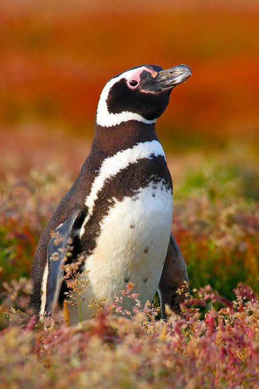

Hello there! The site is called E-portfollia from the italian word follia which means madness. But in a good way. This website will be about 5 penguins I found interesting by first click on google
images for the various penguin species. As you scroll, you will find a bunch of cute penguins and my friend's and my commentary on them. Here's a video of a famous actor,
Benedict Cumberbatch, and his funny way of saying the word penguin. Hope you enjoy scrolling through this site with adorable penguins and penguin-related things<3
The Macaroni Penguin
(Eudyptes chrysolophus) This shampoo hairstylistic goal model is infact, in actuality, not the dish you grew up eating in your canteen. But rather, is an awesome surfer penguin.
The macaroni penguin is a species of penguin found from the Subantarctic to the Antarctic Peninsula. One of six species of crested penguin,
it is very closely related to the royal penguin, and some authorities consider the two to be a single species. The average macaroni penguin lives about 15-20 years.
Macaroni penguins are the most numerous species of penguin, estimated at nine million breeding pairs however, some populations, have experienced at least a 50% decline in the last four decades, most likely due to warming seas and pollution.
:( But, here's a little fun fact about the Macaroni Penguins! The name “macaroni” refers to the orange plume feathers. “Macaroni” was eighteenth century English slang for a man who dressed beyond the dictates of fashion
Australian Little Penguin
((Eudyptula novaehollandiae) This little cutsey wutsey penguin is also called the fairy penguin! Did you know that this beautiful awesome wonderful adorable perfect little thing
is only 33 cm tall and that it only weighs 1.5kg? It's a species of penguin from Australia and the Otago region of New Zealand.
The species was described as Spheniscus novaehollandiae in 1826. It was later reclassified as Eudyptula minor novaehollandiae, a subspecies of the little penguin. These little penguins have been greatly affected by large oil spills
off New Zealand in 2011, which killed 2,000 seabirds (including little penguins) directly, and killed an estimated 20,000 in total based on wider ecosystem impacts. Some colonies have become extinct, and others continue to be at risk.
Some new colonies have been established in urban areas. The species is not considered endangered in New Zealand, with the exception of the white-flippered subspecies found only on Banks Peninsula and nearby Motunau Island. Since the 1960s,
the mainland population has declined by 60-70%; though a small increase has occurred on Motunau Island.
The Emperor Penguin
(Aptenodytes forsteri) These majestical creatures in this beautiful family portrait can grow up to 1.3 meters.
The emperor penguin is the tallest and heaviest of all living penguin species and is endemic to Antarctica.
The male and female are similar in plumage and size, reaching 100 cm in length and weighing from 22 to 45 kg. Sadly, they are also near extinction between 625,000 - 650,000 individual birds left.
And this, like the other penguins and animals around the world, is largely due to global warming and pollution.
The Magellanic Penguin

(Spheniscus magellanicus) This uniquely patterned "zebra looking thing" -kei, is the most angelic of the lot. The Magellanic penguin is a South American penguin, breeding in coastal Patagonia,
including Argentina, Chile, and the Falkland Islands, with some migrating to Brazil and Uruguay, where they are occasionally seen as far north as Espirito Santo. Magellanic Penguins were named after the Portuguese explorer Ferdinand Magellan,
who was the first to sail from the Atlantic Ocean to the Pacific Ocean in the mid-1500s through what is now called the Strait of Magellan. the Magellanic penguin is known for its black body and white belly, countershading that helps it avoid predators while swimming.
When seen from above, a penguin's black back blends into the dark ocean, and from below, its white stomach is camouflaged by the light from the sky.
The Royal Penguin
(Eudyptes schlegeli) "looks like ernest"-kei. Although this does look a bit like my friend, these royal penguins are suepr chill looking guys with slick silhig hair. can be found on the
sub-Antarctic Macquarie Island and adjacent islands. The International Union for Conservation of Nature classifies the royal penguin as near threatened. The scientific name
commemorates the German zoologist Hermann Schlegel. Royal penguins are the largest of the crested penguins. Yellow, orange, and black crests extend to behind the eye.
Crests meet in the middle of the forehead. Their chin can be pale white to gray. They favor rocky or pebbly beaches during most of the year. Royal penguins were heavily exploited in the 19th century but have since recovered. Today, populations are considered stable, (woohoo!)
but since potential threats like plastic pollution and overfishing are prevalent in their habitat, royal penguins are listed as Near Threatened by the IUCN Red List :<.
Special video mention of the chinstrap penguin! Thank you for taking the time out of your day to learn little facts about penguins and gaining awareness about their situation and getting familiar with these 5 species ^^